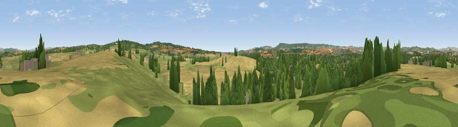

Viewpoint near Ebford
#18310 in England · top 33% of its area beats it · near EbfordThe view, rendered

A 360° render of this exact spot computed from the terrain model, tree cover and land cover — summer colours, afternoon light, calibrated against photographs of famous viewpoints. Real trees, hedges and buildings will differ in detail.
The panorama
Grey silhouette: terrain skyline in each direction (720 bearings, Earth curvature and refraction included). Dashed green: skyline with trees (+15 m) and buildings (+8 m) as obstacles. Blue strip: how far the ground is visible on each bearing.
Where the view opens
Wedge length = distance to the farthest visible ground on that bearing (vegetation-aware). Rings at 10, 25 and 50 km.
What fills the view
37% cropland · 32% grassland · 24% woodland · 5% built-up · 1% water ·
Angular shares of the visible panorama (visual magnitude), not map area. Landscape diversity 0.57 (0–1 Shannon).
Key numbers
More beautiful places nearby
The staircase of upgrades: each row has a higher view potential than everything closer. Driving times are estimates from straight-line distance, calibrated against real road routing — check an actual route before setting out.
| Place | Direction | Drive | Score |
|---|---|---|---|
| Viewpoint near Woodbury Salterton | NE · 4 km | ~8 min | 56.6 |
| Powderham Park | SSW · 5 km | ~10 min | 60.3 |
| Viewpoint near Woodbury | E · 5 km | ~10 min | 72.2 |
| Viewpoint near Kenn | WSW · 9 km | ~17 min | 80.0 |
| Viewpoint near Kenton | SW · 9 km | ~18 min | 80.7 |
| Viewpoint near Knowle | SE · 9 km | ~18 min | 81.9 |
| Viewpoint near Kenton | SW · 10 km | ~19 min | 82.9 |
| High Peak | E · 12 km | ~22 min | 85.3 |
50.68392, -3.43634 · source: screening · position refined by local search. Computed location — check access rights before visiting.